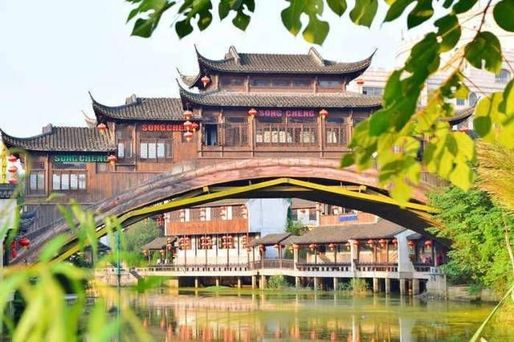
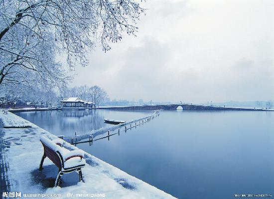
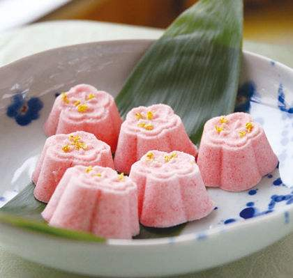
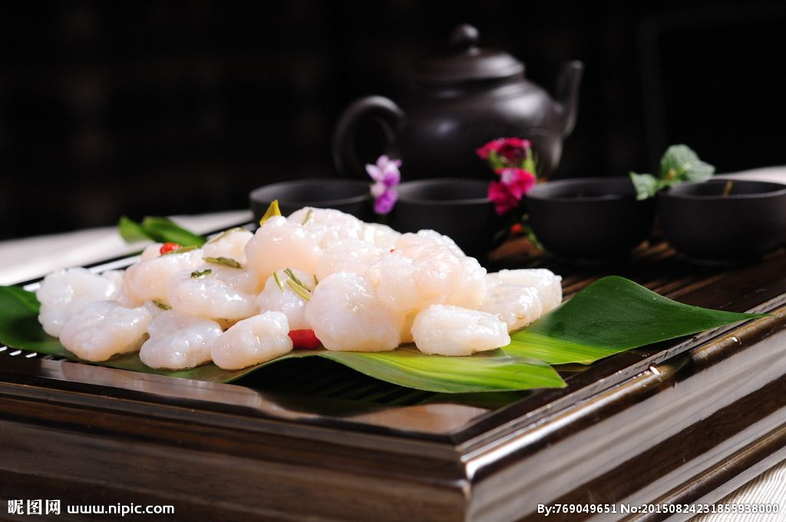

Les places de Hangzhou
- Xihu
- Songcheng
- La vue de neige

Le lac de l'Ouest est un célèbre lac situé dans le centre historique de la ville de Hangzhou, dans la province chinoise du Zhejiang. Le dos du billet de 1 Yuan chinois est la représentation du lac.Wikipédia

Songcheng est situé au numéro 148 de la route Zhijiang, ville de Hangzhou dans la province du Zhejiang, un parc thématique sur l'architecture ancienne de Hangzhou, inauguré en 1996 et désigné «Office du tourisme provincial pour l'année 97 par le tourisme chinois». Zhejiang Top Ten Beautiful Paradise "; en 1998, il est devenu le premier choix du" Bureau national du tourisme de l'administration nationale du tourisme ", en avril 1999, de la" World Entertainment and Theme Park Association "et, en 2000, du niveau national" AAAA " Certificat.

Les habitants de Hangzhou ont hâte de neiger pour une raison, car le cœur de la scène de la neige à West Lake est vraiment magnifique! Ensoleillé n'est pas aussi bon que la pluie, la pluie n'est pas aussi bon que la neige.
Les nourritures de Hangzhou
-

- Le gatêau Dingsheng
- Longjing crevette
- Xihu poisson du vinaigre
Le gâteau Dingsheng est l’une des collations traditionnelles à Hangzhou. On raconte que les habitants de la dynastie Song du Sud avaient été spécialement conçus pour encourager les soldats à Han Jiajun. C'est. Le blanc est rouge, doux et parfumé, et il est doux et délicieux en bouche.

La crevette Longjing est un plat célèbre de Hangzhou, une cuisine à base de crevettes préparées à partir de la spécialité du bourgeon West Lake Longjing de Hangzhou. Longjing est connu comme "le vert, parfumé, doux et beau". La crevette de rivière a été saluée par les anciens comme «le trésor du produit», non seulement tendre et délicieux, mais également riche en nutriments. Les plats préparés avec ces deux ingrédients sont un must.

Le vinaigre de Xihu est un plat célèbre qui a une longue histoire et qui remonte à la dynastie Song. Le vinaigre du lac de l'Ouest est également connu sous le nom de Shuji Chuanzhen. Le poisson au vinaigre de West Lake est généralement fabriqué à partir de carpe de roseau en tant que matière première. Après la torréfaction, versez une couche de vinaigre doux et aigre doux et brillant, des nageoires pectorales dressées, du poisson tendre, de la saveur de crabe, fraîche et sure.